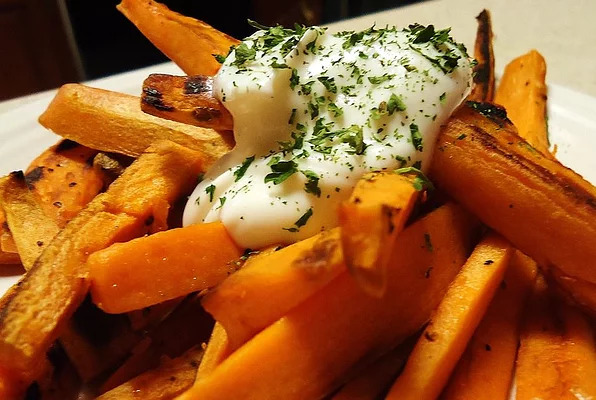

Fried Sweet Potatoes

Sweet Potatoes are a great snack!
They're also an extremely versatile food, and frying them is just one of the many ways to enjoy them! Check out this quick and easy recipe!
Ingredients
- 6 sweet potatoes, peeled
- 1/2 cup butter
- 2 cups packed light brown sugar
Instructions
- Bring a large pot of water to a boil. Add peeled sweet potatoes, and boil for about 4 minutes. Remove from water, and cut into 1/2 inch slices.
- Melt butter in a large frying pan over medium heat. Stir in brown sugar until dissolved, adding more butter if necessary. Add sweet potatoes, and fry until golden brown and fork tender, turning occasionally. Serve hot.
Enjoy!